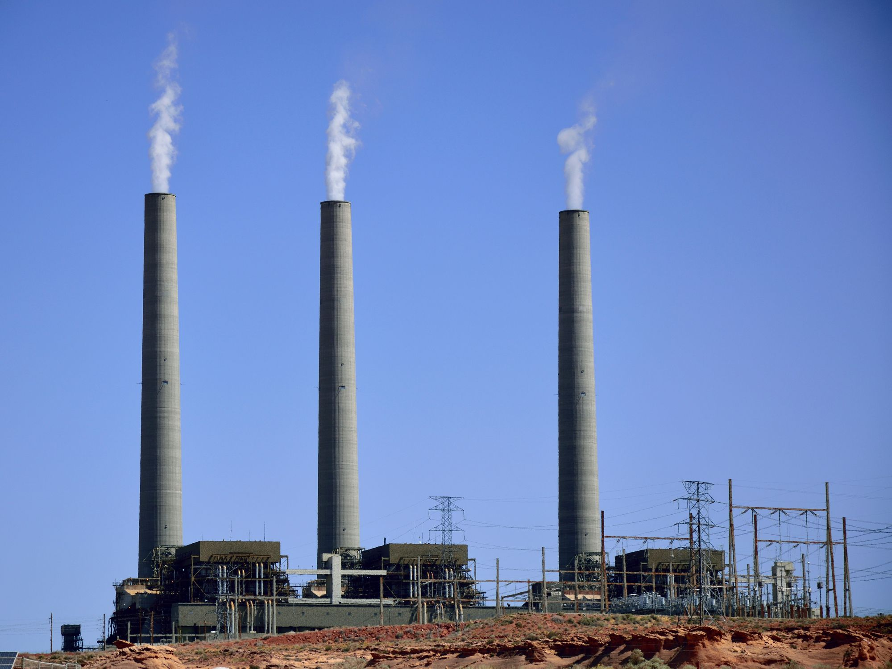

Commensalism: when one organism benefits and the other is not affected
Example: Barnacles attaching themselves to whales for shelter and mobility
Mutualism: when both organisms benefit
A flower displays colors that attract bees so that they can carry the flower's pollen for reproduction. The bee
uses some of the pollen to make food.
Paratism: when one organism benefits and the other is harmed
A fungus grows on a racoon's skin, eventually killing it.
Competition: when two organisms compete for resources
A cheeta and a hyena race eachother to try and catch an antelope.
Predator/Prey: When one organism hunts another for sustanance
A cheeta hunts an antelope for food.
As population growth increases, the need for natural resources also increases. If we are not conservative with our use of these resources, there will not be enough for future generations.
Population growth: When the human population grows and uses more natural resources as a result.
Pollution: When harmful substances enter ecosystems and harm the food chain and/or individual organisms.
Global Warming: The excessive release of greenhouse gases that trap heat inside the atmosphere
Burning Fossil Fuels: When coal, oil, and gas are burned for energy. Contributes to the greenhouse effect.
Habitat destruction: When natural areas such as forests are torn down for the purpose of construction. This can force animals to relocate and disrupt ecological stability.
Nonnative Species: When a foreign species is introduced to an ecosystem and effects the food chain/web.